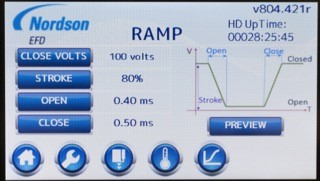

Tech Briefs
September 2015
Nordson EFD introduces a piezoelectric jetting technology
by Debra Vogler, Senior Technical Editor

Bryan Teece, Senior Mechanical Engineer, Nordson EFD
Nordson EFD has introduced a piezoelectric jetting technology called PICO® Pµlse™ valve and PICO Toµch™ controller. According to the company, this technology enables the dispensing of very exact, repeatable micro-deposits as small as 0.5nL at up to 500Hz continuous, with 1500Hz maximum bursts.
The new product’s non-contact jet valve's modular design makes it possible to jet low- to high-viscosity fluids onto any surface, including uneven and tough-to-reach substrates. “A modular product gives the ability to be easily modified,” said Bryan Teece, Senior Mechanical Engineer at Nordson EFD. “In our case, for future customers with needs we don't yet know. We designed a valve to work in our industry’s climate where users’ needs change constantly.” Teece further explained that the performance of the valve can be measured in two ways: 1) how it performs in one application, and 2) how many applications it is capable of performing. “Here, we designed it to perform well in both situations.”
The valve’s fluid body assemblies come in 9 varieties, said Teece. “They come with different seat geometries and orifice sizes, and we are working on more,” Teece told CSR. “These can be exchanged quickly for different fluids at any time.” He further explained that the ability to jet different fluid viscosities comes from the performance of the controller. “The controller allows the user to create a custom program to help optimize the outcome for a given fluid body assembly.”
Figure 1: User programmable ramp and waveform generation for the fine-adjustment of dispensing parameters using the PICO Toµch™ controller: sealing voltage, voltage stroke control, open time, and close time.

Figure 2: Preview of the profile generated by the ramp settings using the PICO Toµch™ controller.
Chip Scale Review asked Teece to explain how the variable stroke design feature enables improved closing time. “By being able to create customized wave forms, specifically the stroke, we are able to control the amount of energy transferred on the fluid,” Teece told CSR. “Control over the open and close curves allow fine-tuning the quality of the dispense, such as reducing satelliting, reduced micro-bubbling, more uniform lines, and improved accuracy. Considering there are infinite fluids that could potentially be dispensed by this valve, we designed the ability to customize the entire wave form.”
The new product’s design allows the pulse time to be adjusted in increments as small as 0.01ms. “The high natural frequency of the actuator design allows for fine adjustment on the scale of 0.01ms,” explained Teece. “It's not just the ability to adjust the pulse time that improves performance, it's the ability to customize the entire wave form that gives us better control.” He added that the stroke, open time, close time and pulse are fully adjustable in 0.01ms increments (Figures 1, 2). “Being able to make small incremental changes allows the user to fine-tune the dispense, which reduces turbulence, reduces air bubbles, and thereby reduces variation.”
 The new Tech News section will be featuring select quotes, commentary, and data based on questions posed to industry technologists by our senior technical editor, Debra Vogler. If your company has significant technical news to announce and you’re invited to participate in these interviews, be prepared to discuss the science behind your latest breakthrough, the R&D challenges that had to be solved along the way, and the industry challenges driving the need for the technology. Send your technology news releases to editor@chipscalereview.com
The new Tech News section will be featuring select quotes, commentary, and data based on questions posed to industry technologists by our senior technical editor, Debra Vogler. If your company has significant technical news to announce and you’re invited to participate in these interviews, be prepared to discuss the science behind your latest breakthrough, the R&D challenges that had to be solved along the way, and the industry challenges driving the need for the technology. Send your technology news releases to editor@chipscalereview.com